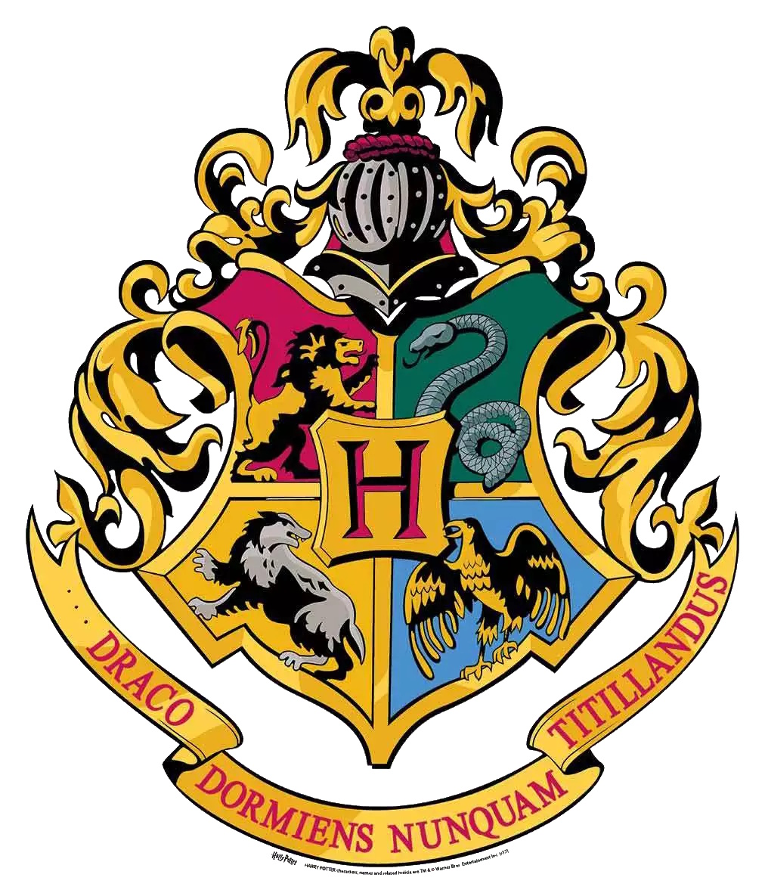

Congrautlations on achieving level
I congratulate you on your long and rigorous journey through the lands of Wizardry and Hogwarts! Here you can check on your current level and in the future, as this is a Work in Progress Page, find social links to connect you with fellow Wizards! I hope you enjoy the early stages of this website, as there will be much more to come! Stay tuned, stay loving, stay true to the Wizard code, and remember to always have honor amongst thieves in this world.
The Journey of Hogwarts
The day begins at Hogwarts with breakfast in the Great Hall. Students sit at their own House table and can eat and socialise, or finish homework. The Headmaster or Headmistress eats with the professors at the High Table placed at the far end of the hall. During breakfast, owls bring in the students' post, generally consisting of The Daily Prophet, letters from parents or friends, or packages from home. A bell signals the start of the first class of the morning at 9 am.
There are two long morning classes with a short break in between them for students to get to their next class. After lunch, classes resume at 1 pm, and there is a break around afternoon teatime before another class period. The classes are about one hour in length, with occasional double periods lasting two hours. Classes end around five o'clock. First-year students get Friday afternoons off, while sixth- and seventh-year students have several free periods during the week. In the evening, students eat their dinner in the Great Hall, after which they are expected to be in their common rooms. Astronomy classes take place late at night in the Astronomy Tower.
The Great Hall film set at Leavesden studios
The four House dormitories have secret entrances, generally known only to members of that house and require a password (Gryffindor & Slytherin), riddle answer (Ravenclaw) or ritual (Hufflepuff) in order to gain entrance. Inside is the common room, which contains armchairs and sofas for the pupils and tables for studying and homework. There are fireplaces to keep the rooms warm, and students either relax here in the evenings or else complete their homework, but may complete their work in the bedroom. There are notice boards in each common room and at other strategic points throughout the school. The students sleep in their House dormitories, which branch off from the common rooms. Each dormitory gets at least two rooms; one for boys and one for girls (an enchantment prevents boys from entering the girls' area, although there is no spell to prevent the reverse from occurring). Each student sleeps in a large four-poster bed with bed covers and heavy curtains in the House colours, and thick white pillows. There is a bedside table for each bed, and each dormitory has a jug of water and goblets on a tray.
On designated weekends, Hogwarts students in their third year or higher, with a signed permission slip, are permitted to walk to the nearby wizarding village of Hogsmeade, where they can relax and enjoy the pubs, restaurants and shops. There appears to be a good relationship between the school and the village, and the students get on well with the locals. Favourite places in Hogsmeade include Honeydukes Sweetshop, Zonko's Joke Shop, clothing stores such as Gladrags Wizardwear, the Shrieking Shack (regarded as the most haunted building in Britain), the pubs The Three Broomsticks and The Hog's Head, and Madam Puddifoot's coffee shop.
